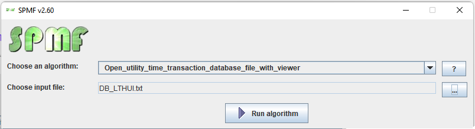
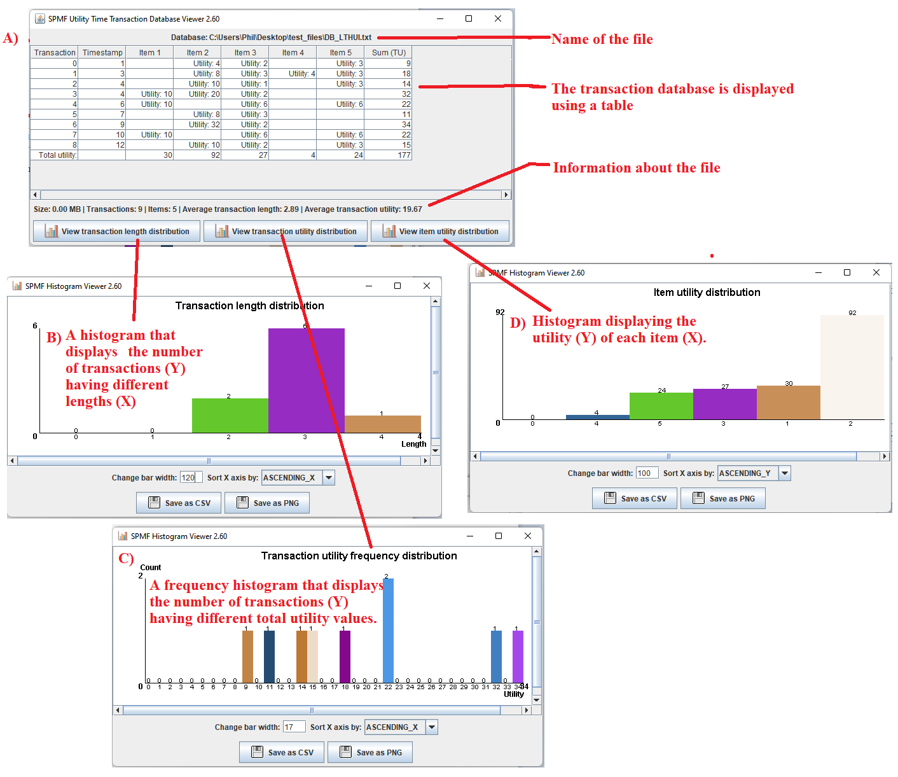

View a time utility transaction database file with the transaction database Viewer (SPMF documentation)
Time utility transaction databases are a type of data taken as input by data mining algorithms offered in SPMF such as LHUI-MINER, PHUI-MINER and PHM
SPMF offers a tool to view the content of a time utility transaction database. This tool is called the SPMF time utility transaction database viewer.
This page explains how to use this tool with an example.
How to run this example?
If you want to run this example from the graphical interface of SPMF, (1) choose the algorithm "Open_utility_time_transaction_database_file_with_viewer", (2) choose the DB_LTHUI.txt file as input, and then (3) click "run algorithm" .

- If you want to run this example from the source code of SPMF, run the file MainTestUtilityTimeTransactionViewer, which is located in the package ca.pfv.spmf.tests
- If you want to execute this example from the command line interface of SPMF, then execute this command:
java -jar spmf.jar run Open_utility_time_transaction_database_file_with_viewer DB_LTHUI.txt
in a folder containing spmf.jar and the file DB_LTHUI.txt which is included with SPMF.
What is displayed?
After running the example, the content of the file will be displayed by the tool. The picture below shows the user interface of this viewer.
The window A) show in the picture below is the main window. It displays the time utility transaction database using a table. The table has 10 rows in this example. Each row (except the last one) is a transaction from the time utility transaction database.
Imagine that each transaction represents the items purchased by a customer.
Take the first row as example.
The cell in the first column indicates that the ID of this transaction is 0.
The cell in the second row indicates that this transaction was recorded at time 1.
The cell in the third column indicates that this transaction 0 does not contain the item 1.
The cell in the fourth column indicates that this transaction 0 contains the item 2 and the utility was 4 $.
The cell in the fifth column indicates that this transaction 0 contains the item 3 and the utility was 2$.
The cell in the sixth column indicates that this transaction 0 does not contain the item 4.
The cell in the seventh column indicates that this transaction 0 contains the item 5 and the utility was 3 $.
The cell in the eigth column indicates that the total amount
of money (utility) spent in this transaction is 4 + 2 + 3= 9 $
The other transactions follow the same format.
Then the last line of the table provides the sum of each column. For example, the cell in the last row and third column indicates that the total amount of utility for item 1 in this database is 10 + 10 + 10 = 30 $.
This view as a table can be useful to understand the content of a time utility transaction database file.
Besides, there are buttons that provides additional features:
- By clicking on the button "View transaction length distribution ", a new window is opened, presented as window B) in the picture below. This window displays the frequency histogram of the different transaction lengths in the current file. The number of transactions is the Y axis and the different transaction lengths are the X axis. There are some buttons in this window to export the data from the frequency histogram as a CSV file so that it can be imported in other software (e.g. Excel), or as a picture. Besides some options are provided to adjust the bar width and the order in which the X axis is sorted.
- By clicking on the button "View transaction utility distribution ", a new window is opened, presented as window C) in the picture below. This window displays the frequency histogram of the different transaction lengths in the current file in terms of utility.. The number of transactions is the Y axis and the different transaction utility values are the X axis. There are some buttons in this window to export the data from the frequency histogram as a CSV file so that it can be imported in other software (e.g. Excel), or as a picture. Besides some options are provided to adjust the bar width and the order in which the X axis is sorted.
- By clicking on the button "View item utility distribution ", a new window is opened, presented as window D) in the picture below. This window displays the utility of the different items as a histogram. The utility is the Y axis and the different items are the X axis. There are some buttons in this window to export the data from the frequency histogram as a CSV file so that it can be imported in other software (e.g. Excel), or as a picture. Besides some options are provided to adjust the bar width and the order in which the X axis is sorted.

What is the input?
The algorithm takes as input a time utility transaction database in SPMF format, as used by algorithm such as LTHUI-MINER
The database used in this example is provided in the text file "DB_LTHUI.txt" in the package ca.pfv.spmf.tests of the SPMF distribution.
The input file format of LTHUI-Miner is defined as follows. It is a text file. Each line represents a transaction. Each line is composed of four sections, as follows.
First, the items contained in the transaction are listed. An item is represented by a positive integer. Each item is separated from the next item by a single space. It is assumed that all items within a same transaction (line) are sorted according to a total order (e.g. ascending order) and that no item can appear twice within the same transaction.
Second, the symbol ":" appears and is followed by the transaction utility (an integer).
Third, the symbol ":" appears and is followed by the utility of each item in this transaction (an integer), separated by single spaces.
Fourth, the symbol ":" appears and is followed by the timestamp (an integer) indicating when the transaction were made.
For example, this is the content of the example file "DB_LTHUI.txt":
@FILETYPE="Transaction database with utility values and time"
@SOURCE="SPMF SOFTWARE https://philippe-fournier-viger.com/spmf/"
2 3 5:9:4 2 3:1
2 3 4 5:18:8 3 4 3:3
2 3 5:14:10 1 3:4
1 2 3:32:10 20 2:4
1 3 5:22:10 6 6:6
2 3:11:8 3:7
2 3:34:32 2:9
1 3 5:22:10 6 6:10
2 3 5:15:10 2 3:12
The first two lines are optional metadata. The first line indicate the type of file and the second line describes the source of the data. Then it is the data section. Consider the first line of data. It means that the transaction {2, 3, 5} has a total utility of 9 and that items 2, 3 and 5 respectively have a utility of 4, 2 and 3 in this transaction, and the transaction were made at time 1. The following lines follow the same format.